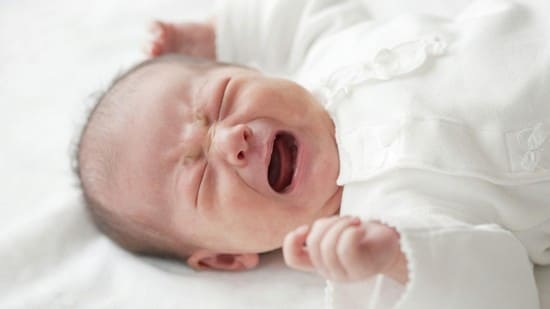
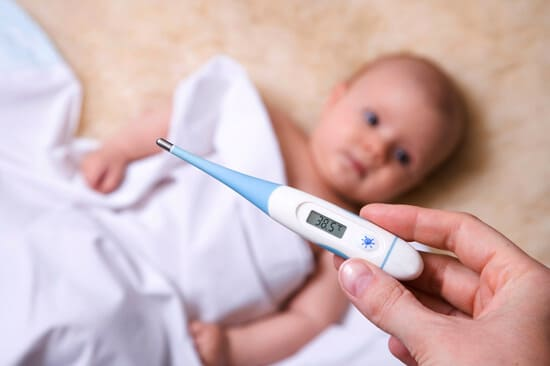

Судороги, происходящие у младенцев или детей младшего возраста при лихорадке, известны как фебрильные судороги. При этом ребенок зачастую теряет сознание и одна или несколько его конечностей начнут трястись или судорожно дрожать. Фебрильные судороги могут длиться от нескольких секунд до 15 минут и даже дольше, но в основном менее 2 минут и встречаются довольно часто. Примерно у каждого 25-го ребенка хотя бы раз в жизни были фебрильные судороги. Около трети детей, однажды перенесших фебрильные судороги, столкнутся с повторными случаями. Большинство фебрильных судорог происходит у детей в возрасте от 6 месяцев до 5 лет. После 5 лет дети, как правило, «перерастают» эти судороги.
ОПАСНЫ ЛИ ФЕБРИЛЬНЫЕ СУДОРОГИ ДЛЯ МОЕГО РЕБЕНКА?
Фебрильные судороги пугают родителей. Хорошая новость — подавляющее большинство фебрильных судорог не опасно. Частый вопрос, который мы слышим от родителей: «Повысят ли фебрильные судороги риск развития у моего ребенка эпилепсии или проблем с головным мозгом?» Нет оснований полагать, что фебрильные судороги вызывают какие-либо повреждения мозга. И примерно у 98% детей, перенесших фебрильные судороги, эпилепсия не развилась, хотя у небольшого количества детей (от 2 до 5%) она позже может появиться.
Точный механизм развития фебрильных судорог неизвестен, и мы не знаем, почему у некоторых детей при повышении температуры тела и лихорадки развиваются фебрильные судороги, а у других — нет. Фебрильные судороги обычно происходят, когда ректальная температура ребенка поднимается выше 38,9°С и, как правило, в первый день лихорадки. Запомните, что, даже если у вашего ребенка температура выше 38,9°С, риск возникновения фебрильных судорог относительно низкий. |
Важно сообщать своему врачу о каждом случае фебрильных судорог у вашего ребенка, чтобы убедиться, что это не сопровождается ничем более серьезным или потенциально опасным для жизни, например, менингитом или другой серьезной инфекцией, поскольку пароксизм может быть симптомом более серьезного заболевания.
ФАКТОРЫ РИСКА
Существуют несколько обстоятельств, увеличивающих риск развития у ребенка фебрильных судорог. К ним относятся:
ДИАГНОСТИКА И ЛЕЧЕНИЕ
Большинство случаев фебрильных судорог наблюдаются родителями или воспитателями. К тому времени, как врач осматривает ребенка, судороги уже прекратились. Ваш врач может назначить некоторые анализы, чтобы убедиться в отсутствии каких-либо серьезных инфекций, таких как менингит. Если другие причины судорог исключены, в большинстве случаев дальнейшего лечения не требуется. Дети, перенесшие фебрильные судороги, как правило, не нуждаются в госпитализации. Однако при затяжных фебрильных судорогах или наличии других признаков инфекции ребенка надо госпитализировать для дальнейшего обследования и лечения.

ЧТО ДЕЛАТЬ
ПРОФИЛАКТИКА
Предотвращение фебрильных судорог у детей, склонных к ним, может быть сложной задачей. Жаропонижающие препараты, такие как ацетаминофен или ибупрофен, могут помочь снизить температуру. Нет никаких доказательств того, что применение жаропонижающих лекарств снижает риск развития у ребенка фебрильных судорог, но будет полезно использовать эти препараты, если температура выше 38,6°С, чтобы ребенок чувствовал себя более комфортно, и чтобы лихорадка не усиливалась. Иногда детям, особенно склонным к фебрильным судорогам, могут быть назначены противосудорожные препараты, которые нужно принимать при лихорадке, поскольку они могут снизить риск развития пароксизма.
Хорошая новость — практически все дети перерастут фебрильные судороги к возрасту 5 лет. |
Здоровье ребенка от докторов Сирс / Сирс У. и др.